전기공사기사 (2009-03-01 기출문제)
1과목: 전기응용 및 공사재료
1. 바닥면적 200[m2]의 교실에 전광속 2500[lm]의 40[W] 형광등을 시설하여 평균 조도가 150[lx]로 되게 하려면 설치할 전등수는? (단, 조명률 50[%], 감광보상률 1.25로 한다.)
- 18등
- 20등
- 26등
- 30등
(정답률: 84%)

2. 다음 중 궤드의 구성요소로 알맞은 것은?
- .레일, 침목, 도상
- 레일, 확도, 고도
- 침목, 철차, 확도
- 도상, 철차, 고도
(정답률: 91%)
3. 화학공장 등 산ㆍ알칼리 또는 유해가스가 존재하는 장소에 가장 적합한 전동기는?
- 방적형 전동기
- 방수형 전동기
- 방부형 전동기
- 방진형 전동기
(정답률: 86%)
4. 반도체에 빛이 가해지면 전기 저항이 변화되는 현상은?
- 열진동효과
- 광전효과
- 지백효과
- 홀효과
(정답률: 94%)
5. 다음 중 회전운동에서 관성 모멘트의 단위는?
- [rad/s2]
- [I]
- [kgㆍm2]
- [Nㆍm]
(정답률: 86%)
6. 역 병렬로 된 2개의 SCR과 유사한 양 방향성 3단자 사이리스터로서 AC 전력의 제어에 사용하는 것은?
- TRIAC
- SCS
- GTO
- LASCR
(정답률: 91%)
7. 다음 유도가열방식에 대한 설명 중 옳지 않은 것은?
- 와전류손에 의한 가열방식이다.
- 상용주파수 정도의 저주파를 이용하는 방식을 저주파 유도가열이라 한다.
- [kHz]정도의 고주파를 이용하는 방식을 고주파 유도 가열이라 한다.
- 주파수가 높을수록 침투깊이는 깊다.
(정답률: 82%)
8. 식염을 전기분해할 때 양극에서 발생하는 가스는?
- 산소
- 수소
- 질소
- 염소
(정답률: 81%)
9. 다음 형광 방전과의 색깔 중 그 온도가 가장 높은 것은?
- 백색
- 주광색
- 은백색
- 적색
(정답률: 82%)
10. 15[℃]의 물 4[ℓ]를 용기에 넣고 1[kW]의 전열기로 가열하여 90[℃]로 하는데 30분이 소요되었다. 이 장치의 효율은 약 몇 [%] 인가?
- 30
- 50
- 70
- 90
(정답률: 88%)
11. 다음 중 약호와 품명이 잘못 표기된 것은?
- CVV-캡타이어 케이블
- DV-인입용 비닐절연전선
- H-경동선
- OW-옥외용 비닐절연전선
(정답률: 79%)
12. 다음 중 절연재료에서 직접적인 열화의 가장 큰 원인에 해당 되는 것은?
- 자외선
- 온도상승
- 산화
- 유전손
(정답률: 90%)
13. COS를 설치할 때 함께 사용되는 재료가 아닌 것은?
- 소켓아이
- 브라켓트
- 퓨즈링크
- 내오손 결합애자
(정답률: 80%)
14. 다음 중 기체의 무기질 절연 재료는 어느 것인가?
- 알드레이
- 운모
- 실리콘유
- 육불화황(SF6)
(정답률: 87%)
15. 접지선을 전선관에 접속할 때 사용하는 재료는?
- 엔드캡
- 어스클립
- 터미널 캡
- 픽스쳐 하키
(정답률: 62%)
16. 전지의 분류에서 물리 전지에 해당 되는 것은?
- 연료 전지
- 리튬 1차 전지
- 광 전지
- 고체 전해질 전지
(정답률: 72%)
17. 피뢰기의 직렬 갭의 역할은?
- 속류차단
- 특성요소 보호
- 저압분배개선
- 손실감소
(정답률: 88%)
18. 애자 사용 공사시 놉애자는 소, 중, 대, 특대의 것이 사용된다. 이 중 대 놉애자 시공에 사용하는 전선의 최대 굵기는 몇 [mm2]인가?
- 15[mm2]
- 50[mm2]
- 94[mm2]
- 240[mm2]
(정답률: 68%)
19. 다음 중 보호선과 중성선의 기능을 겸한 전선은?
- PEN 선
- PEM 선
- PEL 선
- IT 계통 선
(정답률: 87%)
20. 가공전선 규격선정시 고려하여야 할 사항이 아닌 것은?
- 허용전류
- 전압강하
- 기계적강도
- 유전손실
(정답률: 85%)
2과목: 전력공학
21. 각 수용가의 수용설비용량이 50kW, 100kW, 80kW, 60kW, 150kW 이며, 각각의 수용률이 0.6, 0.6, 0.5, 0.5, 0.4 일 때 부하의 부동률이 1.3 이라면 변압기 용량은 약 몇 [kVA]가 필요한가? (단, 평균 부하역률은 80% 라고 한다.)
- 142kVA
- 165kVA
- 183kVA
- 212kVA
(정답률: 17%)
22. 송전방식에는 교류송전과 직류송전방식이 있다. 교류에 비하여 직류송전방식의 장점은?
- 전압변경이 쉽다.
- 송전효율이 좋다.
- 회전자계를 쉽게 얻을 수 있다.
- 설비비가 싸다.
(정답률: 18%)
23. 다음 중 보상 변류기에 대한 설명으로 알맞은 것은?
- 변압기의 고ㆍ저압간의 전류, 위상을 보상한다.
- 계전기의 오차와 위상을 보상한다.
- 전압강하를 보상한다.
- 역률을 보상한다.
(정답률: 19%)
24. 최고 동작전류 이상의 전류가 흐르면 한도를 넘은 양(量)과는 상관 없이 즉시 동작하는 계전기는?
- 반한시계전기
- 정한시계전기
- 순한시계전기
- Notting 한시계전기
(정답률: 20%)
25. 3상 송전선로에서 지름 5mm의 경동선을 간격 1m로 정삼각형 배치를 한 가공전선의 1선 1km 당의 작용인덕턴스는 약 몇 [mH/km] 인가?
- 1.0mH/km
- 1.25mH/km
- 1.5mH/km
- 2.0mH/km
(정답률: 19%)
26. 다음 그림은 변류기의 접속도이다. 이와 같은 접속을 무슨 접속이라 하는가?
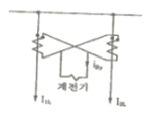
- 교차접속
- 직렬접속
- 병렬접속
- 차동접속
(정답률: 21%)
27. 변압기를 보호하기 위한 계전기로 사용되지 않는 것은?
- 비율차동계전기
- 온도계전기
- 부호홀쓰계전기
- 주파수계전기
(정답률: 18%)
28. 순력발전소에 이용되는 서지탱크의 설치목적이 아닌 것은?
- 흡출관을 보호하기 위함이다.
- 부하의 변동시 생기는 수격압을 경감시킨다.
- 유량을 조절한다.
- 수격압이 압력수로에 미치는 것을 방지한다.
(정답률: 16%)
29. 송전선이 통신선에 미치는 유도장해를 억제 및 제거하는 방법이 아닌 것은?
- 송전선에 충분한 연가를 실시한다.
- 송전계통의 중성점 접지개소를 택하여 중성점을 리액터 접지한다.
- 송전선과 통신선의 상호 접근거리를 크게 한다.
- 송전선측에 특성이 양호한 피뢰기를 설치한다.
(정답률: 16%)
30. 원자로의 제어재가 구비하여야 할 조건으로 옳지 않은 것은?
- 중성자의 흡수 단면적이 적어야 한다.
- 높은 중성자속에서 장시간 그 효과를 간직하여야 한다.
- 내식성이 크고, 기계적 가공이 쉬워야 한다.
- 열과 방사선에 대하여 안정적이어야 한다.
(정답률: 25%)
31. 선로 전압 강하 보상기(LDC)에 대하여 옳게 설명한 것은?
- 분로 리액터로 전압 상승을 억제 하는 것
- 직렬 콘덴서로 선로 리액턴스를 보상하는 것
- 승압기로 저하된 전압을 보상하는 것
- 선로의 전압 강하를 고려하여 모선 전압을 조정하는 것
(정답률: 22%)
32. 중거리 송전선로의 T형 회로에서 일반 회로 정수 C는 무엇을 나타내는가?
- 저항
- 어드미턴스
- 임피던스
- 리액턴스
(정답률: 22%)
33. 출력 185000kW의 화력발전소에서 매시간 140t의 석탄을 사용한다고 한다. 이 발전소의 열효율은 약 몇 [%]인가? (단, 사용하는 석탄의 발열량은 4000kcal/kg이다.)
- 28.41%
- 30.71%
- 32.68%
- 34.58%
(정답률: 16%)
34. 화력발전소의 기본 랭킨 사이클(Rankine cycle)을 바르게 나타낸 것은?
- 보일러→급수펌프→터빈→복수기→과열기→다시 보일러로
- 보일러→터빈→급수펌프→과열기→복수기→다시 보일러로
- 급수펌프→보일러→과열기→터빈→복수기→다시 급수펌프로
- 급수펌프→보일러→터빈→과열기→복수기→다시 급수펌프로
(정답률: 20%)
35. 통신선과 평행된 주파수 60Hz의 3상 1회선 송전선에서 1선지락으로 영상전류가 100A 흐르고 있을 때 통신선에 유기되는 전자유도전압은 약 몇 [V] 인가? (단, 영상전류는 송전선 전체에 걸쳐 같으며, 통신선과 송전선이 상호 인덕턴스는 0.⑤mH/km 이고, 양 선로의 병행 길이는 50km 이다.)
- 94V
- 163V
- 242V
- 283V
(정답률: 14%)
36. 저압 밸런서를 필요로 하는 방식은?
- 3상 3선식
- 3상 4선식
- 단상 2선식
- 단상 3선식
(정답률: 17%)
37. 송배전 계통에 발생하는 이상전압의 내부적 원인이 아닌 것은?
- 직격뢰
- 선로의 개폐
- 아크 접지
- 선로의 이상상태
(정답률: 24%)
38. 다음 중 직격뢰에 대한 방호설비로 가장 적당한 것은?
- 가공지선
- 서지흡수기
- 복도체
- 정전방전기
(정답률: 20%)
39. 400[kVA] 단산 변압기 3대를 △-△ 결선으로 사용하다가 1대의 고장으로 V-V 결선을 항 사용하면 대략 몇 [kW] 부하까지 걸 수 있겠는가?
- 133kW
- 577kW
- 690kW
- 866kW
(정답률: 20%)
40. 변압기 중성점의 비접지방식을 직접접지방식과 비교한 것 중 옳지 않은 것은?
- 전자유도장해가 경감된다.
- 지락전류가 작다.
- 보호계전기의 동작이 확실하다.
- 선로에 흐르는 영산전류는 없다.
(정답률: 18%)
3과목: 전기기기
41. 3상 유도전압 조정기의 동작원리 중 가장 적당한 것은?
- 회전자계에 의한 유도작용을 이용하여 2차 전담의 위상전압 조정에 따라 변화한다.
- 교번자계의 전자유도작용을 이용한다.
- 충전된 두 물체 사이에 작용하는 힘이다.
- 두 전류 사이에 작용하는 힘이다.
(정답률: 20%)
42. 변압기의 여자 어드미턴스를 구하는 시험법은?
- 단락시험
- 무부하시험
- 부하시험
- 충격전압시험
(정답률: 21%)
43. 사이클로 컨버터 (cycloconverter)란?
- AC→AC로 바꾸는 장치이다.
- AC→DC로 바꾸는 장치이다.
- DC→DC로 바꾸는 장치이다.
- DC→AC로 바꾸는 장치이다.
(정답률: 21%)
44. 동기 전동기의 전기자 전류가 최소 일 때 역률은?
- 0
- 0.707
- 0.866
- 1
(정답률: 21%)
45. 100[HP], 600[V], 1200[rpm]의 직류 분권 전동기가 있다. 분권 계자저항이 400[Ω], 전기자저항이 0.22[Ω]이고 정격부하에서의 효율이 90[%]일 때 전부하시의 역기전력은 약 몇 [V] 인가?
- 550
- 570
- 590
- 610
(정답률: 12%)
46. 권선형 유도 전동기와 직류 분권 전동기와의 유사한점으로 가장 옳은 것은?
- 정류자가 있고, 저항으로 속도조정을 할 수 있다.
- 속도 변동률이 크고, 토크가 전류에 비례한다.
- 속도가 가변이고, 기동토크가 기동전류에 비례한다.
- 속도 변동률이 적고, 저항으로 속도조정을 할 수 있다.
(정답률: 14%)
47. 단락비가 큰 동기발전기에 관한 설명 중 옳지 않은 것은?
- 전압변동률이 크다.
- 전기자 반작용이 작다.
- 과부하 용량이 크다.
- 동기 임피던스가 작다.
(정답률: 20%)
48. 브러시레스 DC 서보 모터의 특징으로 옳지 않은 것은?
- 단위 전류당 발생 토크가 크고 역기전력에 의해 불필요한 에너지를 귀환하므로 효율이 좋다.
- 코트 맥동이 작고, 안정된 제어가 용이하다.
- 기계적 시간상수가 크고 응답이 느리다.
- 기계적 접점이 없고 신뢰성이 높다.
(정답률: 19%)
49. 단상 정류자 전동기의 일종인 단상 반발 전동기에 해당 되는 것은?
- 시라게 전동기
- 아트킨손형 전동기
- 단상 직권정류자 전동기
- 반발유도 전동기
(정답률: 18%)
50. 3300[V], 60[Hz]용 변압기의 와류손이 360[W]이다. 이 변압기를 2750[V], 50[Hz]에서 사용할 때 이 변압기의 와류손은 몇 [W] 인가?
- 250
- 330
- 418
- 518
(정답률: 15%)
51. 4극 60[Hz]의 3상 동시 발전기가 있다. 회전자 주변속도를 200[m/s] 이하로 하려면 회전자의 지름을 약 몇 [m]로 하여야 하는가?
- 2.1
- 2.6
- 3.1
- 3.5
(정답률: 13%)
52. 60[Hz], 8극, 3상 유도 전동기가 전부하로 873[rpm]의 속도로 67[kgㆍm]의 토크를 내고 있다. 이 때의 기계적 출력 [kW]은 약 얼마인가?
- 40
- 50
- 60
- 70
(정답률: 18%)
53. 변압기에서 역률 100%일 때의 전압변동률 ε은 어떻게 표시 되는가?
- %저항강하
- % 리액컨스 강하
- % 씨셉턴스 강하
- % 인덕턴스 강하
(정답률: 19%)
54. 단상 유도 전동기의 기동 방법 중 기동 토크가 가장 큰 것은?
- 반발 기동형
- 분산 기동형
- 세이딩 코일형
- 콘덴서 분상 기동형
(정답률: 23%)
55. 변압기의 부하와 전압이 일정하고 주파수가 높아지면?
- 철손증가
- 동손증가
- 동손감소
- 철손감소
(정답률: 14%)
56. 단상 반파의 정류 효율은?
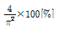
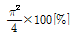
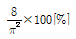
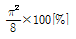
(정답률: 16%)
57. 송전 계통에 접속한 무부하의 동기 전동기를 동기 조상기라 한다. 이 때 동기조상기의 계자를 과열자로 해서 운전 할 경우 옳지 않은 것은?
- 콘덴서로 작용한다.
- 위상이 뒤진 전류가 흐른다.
- 송전선의 역률을 좋게 한다.
- 송전선의 전압강하를 감소시킨다.
(정답률: 17%)
58. 다음 중 대형직류 전도기의 토크를 측정하는데 가장 적당한 방법은?
- 와전류 제동기법
- 프로니 브레이크 법
- 전기 동력계법
- 반환부하법
(정답률: 18%)
59. 3상 유도전동기에서 2차 저항을 증가하면 기동 토크는?
- 증가한다.
- 감소한다.
- 제곱에 반비례한다.
- 변하지 않는다.
(정답률: 11%)
60. 직류 분권 발전기의 전기자 저항이 0.⑤[Ω]이다. 단자 전압이 [V], 회전수 1500[rpm] 일 때 전기자 전류가 100[A] 이다. 이것을 전동기로 사용하여 전기자 전류와 단자전압이 같을 때 회전속도는 약 몇 [rpm] 인가? (단, 전기자 반작용은 무시한다.)
- 1427
- 1577
- 1620
- 1800
(정답률: 11%)
4과목: 회로이론 및 제어공학
61. 분포 정수회로에서 저항 0.5[Ω/km], 인덕턴스 1[μH/km], 정전 용량 6[μF/km], 길이[km]의 송전선로가 있다. 무왜형선로가 되기 위해서는 컨덕턴스 [℧/km]는 얼마가 되어야 하는가?
- 1
- 2
- 3
- 4
(정답률: 16%)
62. 내부에 기전력이 있는 회로가 있다. 이 회로의 한 쌍의 단자 전압을 특정 하였을 때 70[V] 이고, 또 이 단자에서 본 이 회로의 임피던스가 60[Ω]이라 한다. 지금 이 단자에 40[Ω]의 저항을 접속하면, 이 저항에 흐르는 전류는 몇 [A] 인가?
- 0.5
- 0.6
- 0.7
- 0.8
(정답률: 19%)
63. 4단자정수가 각각
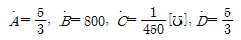
일 때, 전달정수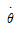
는 얼마인가?- loge 2
- loge 3
- loge 4
- loge 5
(정답률: 16%)
64. 6[Ω]과 2[Ω]의 저항 3개를 그림과 같이 연결하였을 때 a, b 사이의 합성저항은 몇 [Ω]인가?
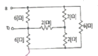
- 1
- 2
- 3
- 4
(정답률: 16%)
65. RL 직렬회로에
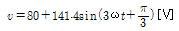
를 가할 때 전류 [A]의 실효값은 약 얼마인가? (단, R=4[Ω], ⍵L=1[Ω]이다.)- 24.2
- 26.3
- 28.3
- 30.2
(정답률: 11%)
66. △결선된 3상 회로에서 상전류가 다음과 같은 때 선전류 I1, I2, I3 중에서 그 크기가 가장 큰 것은 몇 [A]인가?
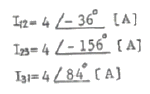
- 2.31
- 4.0
- 6.93
- 8.0
(정답률: 16%)
67. f(t)=te-3t일 때 라플라스 변환은?
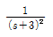
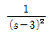
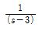
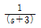
(정답률: 19%)
68. 다음 중 전달함수에 관한 표현으로 옳은 것은?
- 전달함수의 분모의 차수는 초기값에 따라 결정된다.
- 2계 회로에서 전달함수의 분모는 s의 2차식이 된다.
- 전달함수의 분자의 차수에 따라 분모의 차수가 결정된다.
- 2계 회로의 분모와 분자의 차수의 차는 s의 1차식이 된다.
(정답률: 14%)
69. 일정 전압의 직류 전원에 저항을 접속하고 전류를 흘릴때 이 전류의 값을 20[%]증가시키기 위해서는 저항 값을 몇 배로 하여야 하는가?
- 1.25배
- 1.20배
- 0.83배
- 0.80배
(정답률: 19%)
70. 그림과 같은 직류 LC 직렬회로에 대한 설명 중 옳은 것은?
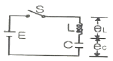
- eL은 진동함수이나 ec는 진동하지 않는다.
- eL의 최대치가 2E까지 될 수 있다.
- ec의 최대치가 2E까지 될 수 있다.
- C의 충전전하 q는 시간 t에 무관하다.
(정답률: 16%)
71. 그림과 같은 회로의 출력 Z는 어떻게 표현되는가?
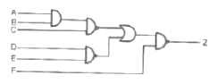
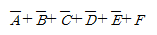
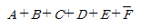
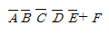
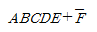
(정답률: 21%)
72. 과도 응답이 소멸되는 정도를 나타내는 강쇠비(decayratio)는?
- 최대오버슈트/제2오버슈트
- 제3오버슈트/최대오버슈트
- 제2오버슈트/최대오버슈트
- 제2오버슈트/제3오버슈트
(정답률: 19%)
73. 잔류편차(off set)가 발생하는 제어는?
- 비례제어
- 적분제어
- 비례미분적분제어
- 비례적분제어
(정답률: 18%)
74. 어떤 제어 계통에서 정상 위치 편차가 유한값일 때 이 제어계는 무슨 형인가?
- 0형
- 1형
- 2형
- 3형
(정답률: 17%)
75.
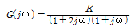
의 이득 여유가 20[dB]일 때 K의 값은?- 0
- 1
- 10
- 1/10
(정답률: 15%)
76. 나이퀴스트(Nyquist) 경로에 포위되는 영역에 특성방정식의 근이 존재하지 않으면 제어계는 어떻게 되는가?
- 불안정
- 안정
- 진동
- 발산
(정답률: 14%)
77.
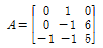
의 고유값은?- -1, -2, -3
- -2, -3, -4
- -1, -2, -4
- -1, -3, -4
(정답률: 15%)
78.
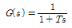
와 같이 주어진 제어시스템에서 절점주파수의 이득은 약 얼마인가?- -2[dB]
- -3[dB]
- -4[dB]
- -5[dB]
(정답률: 16%)
79.
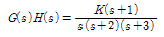
에서 근궤적의 수는?- 1
- 2
- 3
- 4
(정답률: 19%)
80. 그림과 같은 요소는 제어계의 어떤 요소인가?
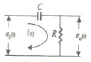
- 적분요소
- 미분요소
- 1차 지연요소
- 1차 지연 미분요소
(정답률: 15%)
5과목: 전기설비기술기준 및 판단기준
81. 백열전등 도는 방전등에 전기를 공급하는 옥내 전로의 대지전압은 몇 [V] 이하를 원칙으로 하는가?
- 300V
- 380V
- 440V
- 600V
(정답률: 22%)
82. 동일 지지물에 고압 가공전선과 저압 가공전선을 병가할 경우 일반적으로 양 전선간의 이격거리는 몇 [cm]이상이어야 하는가?
- 50cm
- 60cm
- 70m
- 80m
(정답률: 14%)
83. 다음 중 발전기를 전로로부터 자동적으로 차단하는 장치를 시설하여야 하는 경우에 해당 되지 않는 것은?
- 발전기에 과전류가 생긴 경우
- 용량이 500kVA 이상의 발전기를 구동하는 수차의 압유 장치의 유압이 현저히 저하한 경우
- 용량이 100kVA 이상의 발전기를 구동하는 풍차의 압유 장치의 유압, 압축공기장치의 공기압이 현저히 저하한 경우
- 용량이 5000kVA 이상인 발전기의 내부에 고장이 생긴 경우
(정답률: 17%)
84. 다음 중 10 경간의 고압가공전선으로 케이블을 사용할 때 이용되는 조가용선에 대한 설명으로 옳은 것은?
- 조가용선은 아연도 철연선으로 단면적 14mm2 이상으로 하여야 하며, 제2종 접지공사를 시행 한다.
- 조가용선은 아연도 철연선으로 단면적 30mm2 이상으로 하여야 하며, 제1종 접지공사를 시행 한다.
- 조가용선은 아연도 철연선으로 단면적 22mm2 이상으로 하여야 하며, 제3종 접지공사를 시행 한다.
- 조가용선은 아연도 철연선으로 단면적 8mm2 이상으로 하여야 하며, 특별제3종 접지공사를 시행 한다.
(정답률: 18%)
85. 풀장용 수중조명등에 전기를 공급하기 위하여 사용되는 절연변압기에 대한 설명으로 옳지 않은 것은?
- 절연변압기 2차측 전로의 사용전압은 150V 이하이어야 한다.
- 절연변압기 2차측 전로의 사용전압은 30V 이하인 경우에는 1차권선과 2차권선 사이에 금속제의 혼촉방지판이 있어야 한다.
- 절연변압기의 2차측 전로에는 반드시 제2종접지를 하며, 그 저항값은 5Ω 이하가 되도록 하여야 한다.
- 절연변압기의 2차측 전로의 사용전압이 30V 를 넘는 경우에는 그 전로에 지락이 생긴 경우 자동적으로 전로를 차단하는 차단장치가 있어야 한다.
(정답률: 14%)
86. 특별 제3종 접지공사를 하여야 하는 급속체와 대지간의 전기저항치가 몇 [Ω] 이하인 경우에는 특별 제3종 접지 공사를 한 것으로 보는가?
- 3Ω
- 5Ω
- 8Ω
- 10Ω
(정답률: 21%)
87. 다음 중 아크용접장치의 시설 기준으로 옳지 않은 것은?
- 용접변압기는 절연변압기일 것
- 용접변압기의 1차측 전로의 대지전압은 400V 이하일 것
- 용접변압기 1차측 전로에는 용접변압기에 가까운 곳에 쉽게 개폐할 수 있는 개폐기를 시설할 것
- 피용접재 또는 이와 전기적으로 접속되는 받침대ㆍ정반등의 금속체에는 제3종 접지공사를 할 것
(정답률: 16%)
88. 전체의 길이가 18m 이고, 설계하중이 6.8kN인 철근 콘크리트주를 지반이 튼튼한 곳에 시설하려고 한다. 기초 안전율을 고려하지 않기 위해서는 묻히는 깊이를 몇 [m] 이상으로 시설하여야 하는가?
- 2.5m
- 2.8m
- 3.0m
- 3.2m
(정답률: 19%)
89. 고압 가공인입선이 케이블 이외의 것으로서 그 아래에 위험표시를 하였다면 전선의 지표상 높이는 몇 [m] 까지로 감할 수 있는가?
- 2.5m
- 3.5m
- 4.5m
- 5.5m
(정답률: 18%)
90. 다음 (㉮), (㉯)에 들어갈 내용으로 알맞은 것은?
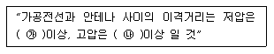
- ㉮ 30cm, ㉯ 60cm
- ㉮ 60cm, ㉯ 90cm
- ㉮ 60cm, ㉯ 80cm
- ㉮ 80cm, ㉯ 120cm
(정답률: 15%)
91. 다음 중 사용전압이 400V 이상인 옥내 저압의 이동전선으로 사용할 수 없는 것은?(관련 규정 개정전 문제로 여기서는 기존 정답인 1번을 누르면 정답 처리됩니다. 자세한 내용은 해설을 참고하세요.)
- 1종 캡타이어 케이블
- 3종 캡타이어 케이블
- 3종 클로로프렌 캡타이어 케이블
- 4종 클로로프렌 캡타이어 케이블
(정답률: 17%)
92. 발전소ㆍ변전소에서 특별고압전로의 접속상태를 모의모선(模擬母線)의 사용 등으로 표시하지 않아도 되는 것은?
- 2회선의 단일모선
- 2회선의 복모선
- 3회선의 단일모선
- 4회선이 복모선
(정답률: 19%)
93. 시가지에 시설하는 고압 가공전선으로 경동선을 사용하려면 그 지름은 최소 몇 [mm] 이어야 하는가?
- 2.6mm
- 3.2mm
- 4.0mm
- 5.0mm
(정답률: 11%)
94. 345kV의 전압을 변압하는 변전소가 있다. 이 변전소에 울타리를 시설하고자 하는 경우, 울타리의 높이와 울타리로부터 충전부분까지의 거리의 합계는 몇 [m] 이상으로 하여야 하는가?
- 7.42m
- 8.28m
- 10.15m
- 12.31m
(정답률: 17%)
95. 건조한 장소에 시설하는 저압용의 개별 기계기구에 전기를 공급하는 전로 또는 개별 기계기구에 전기용품안전관리법의 적용을 받는 인체 감전보호용 누전차단기를 시설하면 외함의 접지를 생략할 수 있다. 이 경우의 누전차단기의 정격으로 알맞은 것은?
- 정격감도전류 30mA 이하, 동작시간 0.03초 이하의 전류 동작형
- 정격감도전류 45mA 이하, 동작시간 0.01초 이하의 전류 동작형
- 정격감도전류 300mA 이하, 동작시간 0.3초 이하의 전류 동작형
- 정격감도전류 450mA 이하, 동작시간 0.1초 이하의 전류 동작형
(정답률: 21%)
96. 시가지에 시설하는 특별고압 가공전선로용 지지물로 사용 될 수 없는 것은? (단, 사용전압이 170000V 이하의 전선로인 경우이다.)
- 철근 콘크리트주
- 목주
- 철탑
- 철주
(정답률: 21%)
97. 고압용 또는 특별고압용 개폐기로서 부하전류를 차단하기 위한 것이 아닌 개폐기의 차단을 방지하기 위한 조치가 아닌 것은?
- 개폐기의 조작위치에 부하전류 유무 표시
- 개폐기 설치위치의 1차측에 방전장치 시설
- 개폐기의 조작위치에 전화기, 기타의 지령장치 시설
- 터블렛 등을 사용함으로서 부하전류가 통하고 있을 때에 개로조작을 방지하기 위한 조치
(정답률: 12%)
98. 특별고압 가공 전선로의 지지물에 시설하는 통신선 또는 이에 직접 접속하는 가공 통신선의 높이는 철도 또는 궤도를 횡단하는 경우에는 레일면산 몇 [m] 이상으로 하여야 하는가?
- 5.0m
- 5.5m
- 6.0m
- 6.5m
(정답률: 23%)
99. 직류 귀선의 궤도 근접 부분이 금속제 지중 관로와 1km안에 접근하는 경우 금속제 지중관로에 대한 전식작용의 장해를 방지하기 위한 귀선의 시설방법으로 다음 중 옳은 것은?
- 귀선은 정극성으로 할 것
- 귀선용 레일의 이음매의 저항을 합친 값은 그 구간의 레일 자체의 저항의 30% 이하로 유지할 것
- 귀선용 궤조는 특수한 곳 이외에는 길이 50m 이상이 되도록 연속하여 용접할 것
- 귀선의 궤도 근접 부분에 1년간의 평균 전류가 통할 때에 생기는 전위차는 그 구간안의 어느 2점 사이에서도 2V 이하일 것
(정답률: 17%)
100. 다음 (㉮), (㉯)에 들어갈 내용으로 알맞은 것은?
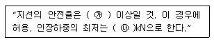
- ㉮ 2.0, ㉯ 2.1
- ㉮ 2.0, ㉯ 4.31
- ㉮ 2.5, ㉯ 2.1
- ㉮ 2.5, ㉯ 4.31
(정답률: 22%)
조명량 = 전등수 × 전광속 × 조명률 × 감광보상률 / 면적
여기서 조명량은 평균 조도와 비례하므로, 조도를 알고 있으면 전등수를 구할 수 있다.
150[lx] = 전등수 × 2500[lm] × 50[%] × 1.25 / 200[m^2]
전등수 = 30
따라서, 이 교실에는 30개의 40[W] 형광등을 설치해야 한다.